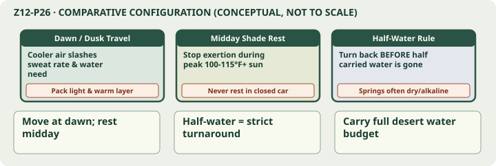

Z12-P26 · Extreme environments · New manuscript
Plan desert travel around dawn/dusk windows, shade and strict water budgets
Prevent fatal heat exhaustion and dehydration in arid basins by aligning movement strictly with cool hours and carried water.
When it applies · Desert trails, canyon country, arid mesas and summer heat waves where air temperatures exceed 95°F–115°F+.
Equipment · Large carried potable water reserve, wide-brim sun hat, light breathable sleeves, shade tarp and route map with verified exits.

Actions
- Schedule active desert movement strictly during cool pre-dawn and early-morning hours, resting completely in deep shade during peak midday heat (typically late morning through late afternoon).[X07, E08, E26]
- Carry far more potable water than cool-climate norms—desert exertion in extreme heat drives massive sweat loss where natural springs are often dry, alkaline or miles apart—and turn back BEFORE half your carried water is gone.[X07, W14, E08]
- Check vehicle cooling, tires, fuel and paper maps before leaving paved highways because cell signal is broadly absent across arid backcountry basins.[X07, E02, T06]
Failure recognition · Starting a desert canyon hike at 11 a.m. in 108°F heat carrying one small bottle while expecting a mapped seasonal tinaja to hold water.[X07, W14, E08]
Verify · Confirm early-morning start, midday shade refuge, half-water turnaround rule and verified off-trip contact before entering arid terrain.[X07, E08, E01, ED]
Stop or change course · Reaching your half-water mark, losing shade access or noticing heat-exhaustion symptoms (dizziness, nausea, heavy fatigue) terminates forward travel immediately.[X07, E08, T05]
Evidence and editorial notes
- E01 · Minnesota DNR · Safety in State Forests (current web edition)
- Section: Before your trip and while visiting · Conditions: State-forest travel and backcountry planning
Support: Know the route, check conditions, carry navigation and safety equipment and share trip details.
Limitations: Conditions and trail maintenance vary seasonally across forest units. · Conflicting evidence: None; aligns with NPS-H.
Editorial note: Foundation for trip planning and pre-departure risk checks. · Specialist reviewer: Land management and search and rescue
Primary source · checked 2026-11-24 - E02 · NPS · Ten Essentials (current web edition)
- Section: Navigation; insulation; emergency shelter; emergency food and water · Conditions: Outdoor trips; adjust kit to season and route
Support: Carry essential systems including navigation, insulation, light, water and emergency shelter.
Limitations: Carrying items without practice or cold-weather verification does not ensure readiness. · Conflicting evidence: None; baseline kit system architecture.
Editorial note: Supports failure-mode packing and kit verification cards. · Specialist reviewer: Field education and search and rescue
Primary source · checked 2026-11-24 - E08 · CDC · About Heat and Your Health (current web edition)
- Section: Protect yourself from heat · Conditions: Outdoor activity in hot conditions
Support: Limit exertion in hot periods, take breaks in cooler places and monitor for illness.
Limitations: High humidity reduces sweat evaporation and raises heat strain at lower air temperatures. · Conflicting evidence: None; aligns with NWS-HEAT and NIOSH-H.
Editorial note: Anchors shade, pacing, and hot-weather shelter selection. · Specialist reviewer: Heat illness and emergency medicine
Primary source · checked 2026-11-24 - E26 · FEMA / Ready.gov · Extreme Heat (current web edition)
- Section: Extreme Heat > Stay Safe in Extreme Heat · Conditions: Prolonged heat waves and high overnight temperatures
Support: Use ventilated shade, hydration, light breathable clothing, and cooling centers when available; monitor vulnerable companions continuously for heat exhaustion or heat stroke.
Limitations: Shaded tarps reduce radiant load but cannot replace medical cooling when core temperature rises. · Conflicting evidence: None; aligns with CDC-HEAT and NWS-HEAT.
Editorial note: Supports hot-weather shelter orientation and heat-stress stop conditions. · Specialist reviewer: Heat safety and emergency medicine
Primary source · checked 2026-11-24 - T05 · CDC NIOSH · Heat-related Illnesses (current web edition)
- Section: Heat stroke > First aid · Conditions: Heat exposure and altered mental status
Support: Heat illness may be life-threatening. Seek emergency care for suspected heat stroke and start cooling promptly.
Limitations: Delays in active cooling worsen neurologic outcomes. · Conflicting evidence: None; aligns with CDC-HEAT.
Editorial note: Core heat-emergency escalation rule. · Specialist reviewer: Emergency and wilderness medicine
Primary source · checked 2026-11-24 - T06 · NPS · Outdoor Emergency Plan (current web edition)
- Section: If you get lost or hurt; call for help · Conditions: Outdoor US emergency
Support: Communicate location, last known point, situation and needs. Stay put when unable to establish a safe route unless immediate danger requires movement.
Limitations: Cell signal is unreliable in backcountry terrain; pre-trip plans bridge communication gaps. · Conflicting evidence: None; core lost-person decision rule.
Editorial note: Foundation for stay/signal/move and dispatch handoff cards. · Specialist reviewer: Search and rescue
Primary source · checked 2026-11-24 - W14 · CDC · How to Create an Emergency Water Supply (current web edition)
- Section: How Much Water to Store; Rotation · Conditions: Household emergency water reserve planning
Support: Plan at least 1 gallon per person per day for at least 3 days (more for heat, illness, pregnancy, or pets); rotate self-filled water every 6 months.
Limitations: Backcountry active travel demands vary sharply by exertion, temperature, and humidity. · Conflicting evidence: None; household baseline is cited only as a planning floor, not a physiological maximum.
Editorial note: Distinguishes household storage floors from active field hydration demands. · Specialist reviewer: Household preparedness and drinking-water safety
Primary source · checked 2026-11-24 - X07 · NPS · Death Valley Safety (Desert Travel and Heat) (current web edition)
- Section: Death Valley Safety > Desert Heat, Dehydration, Flash Floods and Vehicle Breakdown · Conditions: Arid desert travel, canyon country and extreme summer heat
Support: Desert heat accelerates fluid and electrolyte loss rapidly, temperatures inside parked vehicles spike to fatal levels within minutes, dry washes flash-flood from distant storms and staying with a disabled road vehicle is generally safer than walking into extreme heat.
Limitations: Cell service is widely absent across desert basins; water needs can exceed 1 gallon/day dramatically during heat. · Conflicting evidence: None; aligns with CDC-HEAT and NWS-HEAT.
Editorial note: Core desert-environment evidence across Z12 heat/arid cards. · Specialist reviewer: Desert safety and emergency medicine
Primary source · checked 2026-11-24
Source lineage · NPS Death Valley safety and CDC heat; new manuscript · Classification · New manuscript.